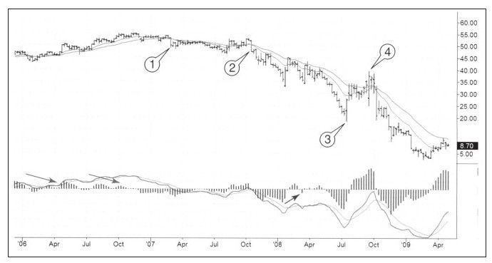
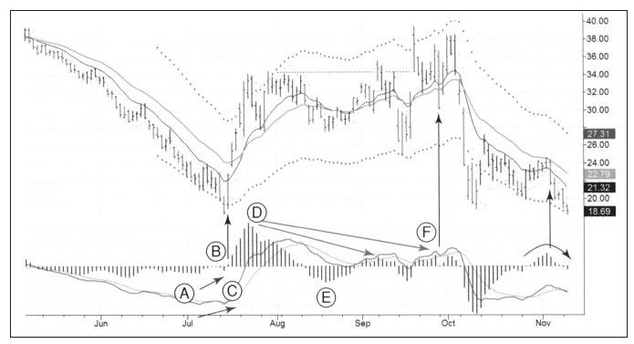

在信用泛滥过去很久的今天，银行已经不再放贷。它们的罪恶行为详细地记载在今天的图书中，这些图书包括难以置信的动人的《最伟大的交易》（The greatest trade ever）（格雷戈里·朱克曼）和《大空头》（The big short）（迈克尔·刘易斯）。2007年发行垃圾债券的机构尝到恶果，2008年这些债券被分块，低评级的部分当作垃圾直接处理掉。美国银行就是其中非常倒霉的机构之一。
图9-12传递了几个重要的信息：
·请看图中左下两个斜箭头标注的顶背离，此时BAC有气无力地上涨到其最后的高点55美元附近。
·区域1，13周快速EMA下穿26周慢速EMA，表明股价进入熊市。股价再未反弹到之前的高度，2007年没有，即便到了我写本书的2010年也没有。
·“子弹”2是一次回抽，快速EMA反弹到接近慢速EMA是绝无仅有的一周反弹，然后又再度下跌。这种情形表明没有完美的模式，偶尔的回抽是正常的交易风险。
·下跌期间，趋势被几次快速反弹打断过。最强烈的一次是图中3到4的位置，股价在两个月内从19美元反弹到39美元。股价在熊市中很短的时间内翻倍，之后又暴跌到更低的位置。说到这儿，你还想持有头寸度过整个熊市吗？

这次熊市中的快速反弹是因为倒霉的空头被夹在门中不能脱身，之后的痛苦让他们不计价格地平仓。一旦这些倒霉的空头平仓完毕，下跌重新开始。
BAC股价反弹后一路下跌，从反弹高点39美元低到3美元以下。如果你需要一则在周线图上制定战略决策、日线图上制定战术决策的案例的话，BAC周线图就能胜任。它在周线图上向你指明了战略方向，你只需要看日线图并在日线图上做出战术进出决策即可。
我们看看在周线图下跌的趋势中是什么“照亮”了日线图。股价从底部20美元涨到近40美元的急速反弹，这次反弹把很多看空者震出局，而后股价一路暴跌至个位数。
首先，如图9-13所示，日线图多次给出熊市反弹开始的警示信号。图中A-B-C所示的底背离，是技术分析最强烈的信号之一。这个清晰的信号表明交易者要么买要么等待，完全没有理由在MACD柱背离的反弹初期做空。当你看到人们疯狂地朝你的方向涌入时，最好赶紧躲开。

多数做空者在反弹开始的前5天被横扫，幸存者落荒而逃，导致股价向上假突破，同时MACD柱正在构建顶背离D-E-F，一旦顶背离完成，下跌立即展开。在图的右侧，MACD反转系统再次发出做空信号。
周线图为交易给出战略决策的信号后，日线图就要做出具体的何时入场、何时出场、何时空仓的决策。在做计划时，使用两种时间框架对做出正确决策非常有利。
以分析周线图开始并在此做好战略判断，以日线图开始分析对制订计划不利。长期图表要定期更新并阶段性分析总结。在长期图表上做出战略决策并写下来，之后开始转向短期图表并做好入场和出场的具体计划。